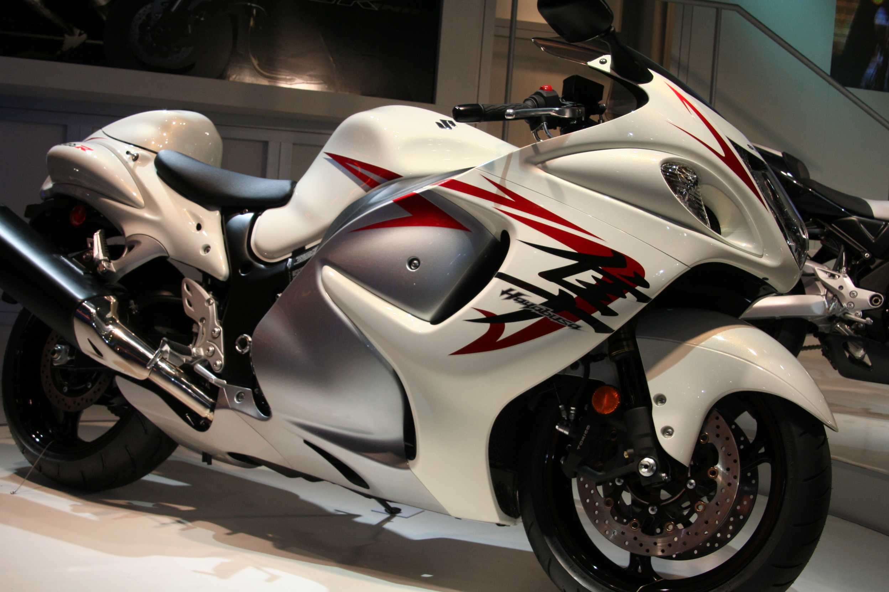

(japonų kalba: ス ズ キ 株式会社, „Hepburn“: „Suzuki Kabushiki-Kaisha“) yra japonų tarptautinė korporacija, kurios būstinė yra Minami-ku, Hamamatsu. išoriniai jūriniai varikliai, neįgaliųjų vežimėliai ir daugybė kitų mažų vidaus degimo variklių. 2016 m. „Suzuki“ buvo vienuoliktas pagal dydį automobilių gamintojas visame pasaulyje. „Suzuki“ turi daugiau nei 45 000 darbuotojų ir turi 35 gamybos įrenginius 23 šalyse, o 133 platintojus - 192 šalyse. Pasaulinė automobilių pardavimo apimtis yra dešimta pagal dydį pasaulyje, o pardavimo vidaus rinkoje apimtis - trečia pagal dydį šalyje.

